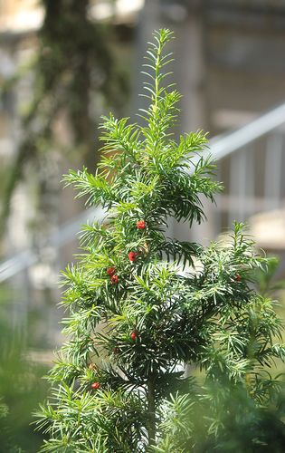

Тис ягодный

Описание товара:
Тис обыкновенный. Taxus baccata
Характеристики товара:
- Происхождение: Произрастает в Западной, Центральной и Южной Европе
- Диаметр горшка: 15 см.
- Освещение: теневыносливая
-
Уход: Рекомендовано опрыскивание в летний период времени. Полив обильный с обязательным высушиванием земляного кома.
- Примечания: Иногда называют - Негной-дерево. Ядовито.